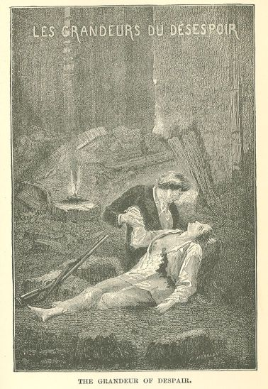

Les Misérables
BOOK THIRTEENTH.—MARIUS ENTERS THE SHADOW
CHAPTER I—FROM THE RUE PLUMET TO THE QUARTIER SAINT-DENIS
The voice which had summoned Marius through the twilight to the barricade of the Rue
de la Chanvrerie, had produced on him the effect of the voice of destiny. He wished
to die; the opportunity presented itself; he knocked at the door of the tomb, a hand
in the darkness offered him the key. These melancholy openings which take place in
the gloom before despair, are tempting. Marius thrust aside the bar which had so often
allowed him to pass, emerged from the garden, and said: "I will go."
Mad with grief, no longer conscious of anything fixed or solid in his brain, incapable
of accepting anything thenceforth of fate after those two months passed in the intoxication
of youth and love, overwhelmed at once by all the reveries of despair, he had but
one desire remaining, to make a speedy end of all.
He set out at rapid pace. He found himself most opportunely armed, as he had Javert's
pistols with him.
The young man of whom he thought that he had caught a glimpse, had vanished from his
sight in the street.
Marius, who had emerged from the Rue Plumet by the boulevard, traversed the Esplanade
and the bridge of the Invalides, the Champs Elysees, the Place Louis XV., and reached
the Rue de Rivoli. The shops were open there, the gas was burning under the arcades,
women were making their purchases in the stalls, people were eating ices in the Cafe
Laiter, and nibbling small cakes at the English pastry-cook's shop. Only a few posting-chaises
were setting out at a gallop from the Hotel des Princes and the Hotel Meurice.
Marius entered the Rue Saint-Honore through the Passage Delorme. There the shops were
closed, the merchants were chatting in front of their half-open doors, people were
walking about, the street lanterns were lighted, beginning with the first floor, all
the windows were lighted as usual. There was cavalry on the Place du Palais-Royal.
Marius followed the Rue Saint-Honore. In proportion as he left the Palais-Royal behind
him, there were fewer lighted windows, the shops were fast shut, no one was chatting
on the thresholds, the street grew sombre, and, at the same time, the crowd increased
in density. For the passers-by now amounted to a crowd. No one could be seen to speak
in this throng, and yet there arose from it a dull, deep murmur.
Near the fountain of the Arbre-Sec, there were "assemblages", motionless and gloomy
groups which were to those who went and came as stones in the midst of running water.
At the entrance to the Rue des Prouvaires, the crowd no longer walked. It formed a
resisting, massive, solid, compact, almost impenetrable block of people who were huddled
together, and conversing in low tones. There were hardly any black coats or round
hats now, but smock frocks, blouses, caps, and bristling and cadaverous heads. This
multitude undulated confusedly in the nocturnal gloom. Its whisperings had the hoarse
accent of a vibration. Although not one of them was walking, a dull trampling was
audible in the mire. Beyond this dense portion of the throng, in the Rue du Roule,
in the Rue des Prouvaires, and in the extension of the Rue Saint-Honore, there was
no longer a single window in which a candle was burning. Only the solitary and diminishing
rows of lanterns could be seen vanishing into the street in the distance. The lanterns
of that date resembled large red stars, hanging to ropes, and shed upon the pavement
a shadow which had the form of a huge spider. These streets were not deserted. There
could be descried piles of guns, moving bayonets, and troops bivouacking. No curious
observer passed that limit. There circulation ceased. There the rabble ended and the
army began.
Marius willed with the will of a man who hopes no more. He had been summoned, he must
go. He found a means to traverse the throng and to pass the bivouac of the troops,
he shunned the patrols, he avoided the sentinels. He made a circuit, reached the Rue
de Bethisy, and directed his course towards the Halles. At the corner of the Rue des
Bourdonnais, there were no longer any lanterns.
After having passed the zone of the crowd, he had passed the limits of the troops;
he found himself in something startling. There was no longer a passer-by, no longer
a soldier, no longer a light, there was no one; solitude, silence, night, I know not
what chill which seized hold upon one. Entering a street was like entering a cellar.
He continued to advance.
He took a few steps. Some one passed close to him at a run. Was it a man? Or a woman?
Were there many of them? he could not have told. It had passed and vanished.
Proceeding from circuit to circuit, he reached a lane which he judged to be the Rue
de la Poterie; near the middle of this street, he came in contact with an obstacle.
He extended his hands. It was an overturned wagon; his foot recognized pools of water,
gullies, and paving-stones scattered and piled up. A barricade had been begun there
and abandoned. He climbed over the stones and found himself on the other side of the
barrier. He walked very near the street-posts, and guided himself along the walls
of the houses. A little beyond the barricade, it seemed to him that he could make
out something white in front of him. He approached, it took on a form. It was two
white horses; the horses of the omnibus harnessed by Bossuet in the morning, who had
been straying at random all day from street to street, and had finally halted there,
with the weary patience of brutes who no more understand the actions of men, than
man understands the actions of Providence.
Marius left the horses behind him. As he was approaching a street which seemed to
him to be the Rue du Contrat-Social, a shot coming no one knows whence, and traversing
the darkness at random, whistled close by him, and the bullet pierced a brass shaving-dish
suspended above his head over a hairdresser's shop. This pierced shaving-dish was
still to be seen in 1848, in the Rue du Contrat-Social, at the corner of the pillars
of the market.
This shot still betokened life. From that instant forth he encountered nothing more.
The whole of this itinerary resembled a descent of black steps.
Nevertheless, Marius pressed forward.
CHAPTER II—AN OWL'S VIEW OF PARIS
A being who could have hovered over Paris that night with the wing of the bat or the
owl would have had beneath his eyes a gloomy spectacle.
All that old quarter of the Halles, which is like a city within a city, through which
run the Rues Saint-Denis and Saint-Martin, where a thousand lanes cross, and of which
the insurgents had made their redoubt and their stronghold, would have appeared to
him like a dark and enormous cavity hollowed out in the centre of Paris. There the
glance fell into an abyss. Thanks to the broken lanterns, thanks to the closed windows,
there all radiance, all life, all sound, all movement ceased. The invisible police
of the insurrection were on the watch everywhere, and maintained order, that is to
say, night. The necessary tactics of insurrection are to drown small numbers in a
vast obscurity, to multiply every combatant by the possibilities which that obscurity
contains. At dusk, every window where a candle was burning received a shot. The light
was extinguished, sometimes the inhabitant was killed. Hence nothing was stirring.
There was nothing but fright, mourning, stupor in the houses; and in the streets,
a sort of sacred horror. Not even the long rows of windows and stores, the indentations
of the chimneys, and the roofs, and the vague reflections which are cast back by the
wet and muddy pavements, were visible. An eye cast upward at that mass of shadows
might, perhaps, have caught a glimpse here and there, at intervals, of indistinct
gleams which brought out broken and eccentric lines, and profiles of singular buildings,
something like the lights which go and come in ruins; it was at such points that the
barricades were situated. The rest was a lake of obscurity, foggy, heavy, and funereal,
above which, in motionless and melancholy outlines, rose the tower of Saint-Jacques,
the church of Saint-Merry, and two or three more of those grand edifices of which
man makes giants and the night makes phantoms.
All around this deserted and disquieting labyrinth, in the quarters where the Parisian
circulation had not been annihilated, and where a few street lanterns still burned,
the aerial observer might have distinguished the metallic gleam of swords and bayonets,
the dull rumble of artillery, and the swarming of silent battalions whose ranks were
swelling from minute to minute; a formidable girdle which was slowly drawing in and
around the insurrection.
The invested quarter was no longer anything more than a monstrous cavern; everything
there appeared to be asleep or motionless, and, as we have just seen, any street which
one might come to offered nothing but darkness.
A wild darkness, full of traps, full of unseen and formidable shocks, into which it
was alarming to penetrate, and in which it was terrible to remain, where those who
entered shivered before those whom they awaited, where those who waited shuddered
before those who were coming. Invisible combatants were entrenched at every corner
of the street; snares of the sepulchre concealed in the density of night. All was
over. No more light was to be hoped for, henceforth, except the lightning of guns,
no further encounter except the abrupt and rapid apparition of death. Where? How?
When? No one knew, but it was certain and inevitable. In this place which had been
marked out for the struggle, the Government and the insurrection, the National Guard,
and popular societies, the bourgeois and the uprising, groping their way, were about
to come into contact. The necessity was the same for both. The only possible issue
thenceforth was to emerge thence killed or conquerors. A situation so extreme, an
obscurity so powerful, that the most timid felt themselves seized with resolution,
and the most daring with terror.
Moreover, on both sides, the fury, the rage, and the determination were equal. For
the one party, to advance meant death, and no one dreamed of retreating; for the other,
to remain meant death, and no one dreamed of flight.
It was indispensable that all should be ended on the following day, that triumph should
rest either here or there, that the insurrection should prove itself a revolution
or a skirmish. The Government understood this as well as the parties; the most insignificant
bourgeois felt it. Hence a thought of anguish which mingled with the impenetrable
gloom of this quarter where all was at the point of being decided; hence a redoubled
anxiety around that silence whence a catastrophe was on the point of emerging. Here
only one sound was audible, a sound as heart-rending as the death rattle, as menacing
as a malediction, the tocsin of Saint-Merry. Nothing could be more blood-curdling
than the clamor of that wild and desperate bell, wailing amid the shadows.
As it often happens, nature seemed to have fallen into accord with what men were about
to do. Nothing disturbed the harmony of the whole effect. The stars had disappeared,
heavy clouds filled the horizon with their melancholy folds. A black sky rested on
these dead streets, as though an immense winding-sheet were being outspread over this
immense tomb.
While a battle that was still wholly political was in preparation in the same locality
which had already witnessed so many revolutionary events, while youth, the secret
associations, the schools, in the name of principles, and the middle classes, in the
name of interests, were approaching preparatory to dashing themselves together, clasping
and throwing each other, while each one hastened and invited the last and decisive
hour of the crisis, far away and quite outside of this fatal quarter, in the most
profound depths of the unfathomable cavities of that wretched old Paris which disappears
under the splendor of happy and opulent Paris, the sombre voice of the people could
be heard giving utterance to a dull roar.
A fearful and sacred voice which is composed of the roar of the brute and of the word
of God, which terrifies the weak and which warns the wise, which comes both from below
like the voice of the lion, and from on high like the voice of the thunder.
CHAPTER III—THE EXTREME EDGE
Marius had reached the Halles.
There everything was still calmer, more obscure and more motionless than in the neighboring
streets. One would have said that the glacial peace of the sepulchre had sprung forth
from the earth and had spread over the heavens.
Nevertheless, a red glow brought out against this black background the lofty roofs
of the houses which barred the Rue de la Chanvrerie on the Saint-Eustache side. It
was the reflection of the torch which was burning in the Corinthe barricade. Marius
directed his steps towards that red light. It had drawn him to the Marche-aux-Poirees,
and he caught a glimpse of the dark mouth of the Rue des Prêcheurs. He entered it.
The insurgents' sentinel, who was guarding the other end, did not see him. He felt
that he was very close to that which he had come in search of, and he walked on tiptoe.
In this manner he reached the elbow of that short section of the Rue Mondetour which
was, as the reader will remember, the only communication which Enjolras had preserved
with the outside world. At the corner of the last house, on his left, he thrust his
head forward, and looked into the fragment of the Rue Mondetour.
A little beyond the angle of the lane and the Rue de la Chanvrerie which cast a broad
curtain of shadow, in which he was himself engulfed, he perceived some light on the
pavement, a bit of the wine-shop, and beyond, a flickering lamp within a sort of shapeless
wall, and men crouching down with guns on their knees. All this was ten fathoms distant
from him. It was the interior of the barricade.
The houses which bordered the lane on the right concealed the rest of the wine-shop,
the large barricade, and the flag from him.
Marius had but a step more to take.
Then the unhappy young man seated himself on a post, folded his arms, and fell to
thinking about his father.
He thought of that heroic Colonel Pontmercy, who had been so proud a soldier, who
had guarded the frontier of France under the Republic, and had touched the frontier
of Asia under Napoleon, who had beheld Genoa, Alexandria, Milan, Turin, Madrid, Vienna,
Dresden, Berlin, Moscow, who had left on all the victorious battle-fields of Europe
drops of that same blood, which he, Marius, had in his veins, who had grown gray before
his time in discipline and command, who had lived with his sword-belt buckled, his
epaulets falling on his breast, his cockade blackened with powder, his brow furrowed
with his helmet, in barracks, in camp, in the bivouac, in ambulances, and who, at
the expiration of twenty years, had returned from the great wars with a scarred cheek,
a smiling countenance, tranquil, admirable, pure as a child, having done everything
for France and nothing against her.
He said to himself that his day had also come now, that his hour had struck, that
following his father, he too was about to show himself brave, intrepid, bold, to run
to meet the bullets, to offer his breast to bayonets, to shed his blood, to seek the
enemy, to seek death, that he was about to wage war in his turn and descend to the
field of battle, and that the field of battle upon which he was to descend was the
street, and that the war in which he was about to engage was civil war!
He beheld civil war laid open like a gulf before him, and into this he was about to
fall. Then he shuddered.
He thought of his father's sword, which his grandfather had sold to a second-hand
dealer, and which he had so mournfully regretted. He said to himself that that chaste
and valiant sword had done well to escape from him, and to depart in wrath into the
gloom; that if it had thus fled, it was because it was intelligent and because it
had foreseen the future; that it had had a presentiment of this rebellion, the war
of the gutters, the war of the pavements, fusillades through cellar-windows, blows
given and received in the rear; it was because, coming from Marengo and Friedland,
it did not wish to go to the Rue de la Chanvrerie; it was because, after what it had
done with the father, it did not wish to do this for the son! He told himself that
if that sword were there, if after taking possession of it at his father's pillow,
he had dared to take it and carry it off for this combat of darkness between Frenchmen
in the streets, it would assuredly have scorched his hands and burst out aflame before
his eyes, like the sword of the angel! He told himself that it was fortunate that
it was not there and that it had disappeared, that that was well, that that was just,
that his grandfather had been the true guardian of his father's glory, and that it
was far better that the colonel's sword should be sold at auction, sold to the old-clothes
man, thrown among the old junk, than that it should, to-day, wound the side of his
country.
And then he fell to weeping bitterly.
This was horrible. But what was he to do? Live without Cosette he could not. Since
she was gone, he must needs die. Had he not given her his word of honor that he would
die? She had gone knowing that; this meant that it pleased her that Marius should
die. And then, it was clear that she no longer loved him, since she had departed thus
without warning, without a word, without a letter, although she knew his address!
What was the good of living, and why should he live now? And then, what! should he
retreat after going so far? should he flee from danger after having approached it?
should he slip away after having come and peeped into the barricade? slip away, all
in a tremble, saying: "After all, I have had enough of it as it is. I have seen it,
that suffices, this is civil war, and I shall take my leave!" Should he abandon his
friends who were expecting him? Who were in need of him possibly! who were a mere
handful against an army! Should he be untrue at once to his love, to country, to his
word? Should he give to his cowardice the pretext of patriotism? But this was impossible,
and if the phantom of his father was there in the gloom, and beheld him retreating,
he would beat him on the loins with the flat of his sword, and shout to him: "March
on, you poltroon!"
Thus a prey to the conflicting movements of his thoughts, he dropped his head.
All at once he raised it. A sort of splendid rectification had just been effected
in his mind. There is a widening of the sphere of thought which is peculiar to the
vicinity of the grave; it makes one see clearly to be near death. The vision of the
action into which he felt that he was, perhaps, on the point of entering, appeared
to him no more as lamentable, but as superb. The war of the street was suddenly transfigured
by some unfathomable inward working of his soul, before the eye of his thought. All
the tumultuous interrogation points of revery recurred to him in throngs, but without
troubling him. He left none of them unanswered.
Let us see, why should his father be indignant? Are there not cases where insurrection
rises to the dignity of duty? What was there that was degrading for the son of Colonel
Pontmercy in the combat which was about to begin? It is no longer Montmirail nor Champaubert;
it is something quite different. The question is no longer one of sacred territory,—but
of a holy idea. The country wails, that may be, but humanity applauds. But is it true
that the country does wail? France bleeds, but liberty smiles; and in the presence
of liberty's smile, France forgets her wound. And then if we look at things from a
still more lofty point of view, why do we speak of civil war?
Civil war—what does that mean? Is there a foreign war? Is not all war between men,
war between brothers? War is qualified only by its object. There is no such thing
as foreign or civil war; there is only just and unjust war. Until that day when the
grand human agreement is concluded, war, that at least which is the effort of the
future, which is hastening on against the past, which is lagging in the rear, may
be necessary. What have we to reproach that war with? War does not become a disgrace,
the sword does not become a disgrace, except when it is used for assassinating the
right, progress, reason, civilization, truth. Then war, whether foreign or civil,
is iniquitous; it is called crime. Outside the pale of that holy thing, justice, by
what right does one form of man despise another? By what right should the sword of
Washington disown the pike of Camille Desmoulins? Leonidas against the stranger, Timoleon
against the tyrant, which is the greater? the one is the defender, the other the liberator.
Shall we brand every appeal to arms within a city's limits without taking the object
into a consideration? Then note the infamy of Brutus, Marcel, Arnould von Blankenheim,
Coligny, Hedgerow war? War of the streets? Why not? That was the war of Ambiorix,
of Artevelde, of Marnix, of Pelagius. But Ambiorix fought against Rome, Artevelde
against France, Marnix against Spain, Pelagius against the Moors; all against the
foreigner. Well, the monarchy is a foreigner; oppression is a stranger; the right
divine is a stranger. Despotism violates the moral frontier, an invasion violates
the geographical frontier. Driving out the tyrant or driving out the English, in both
cases, regaining possession of one's own territory. There comes an hour when protestation
no longer suffices; after philosophy, action is required; live force finishes what
the idea has sketched out; Prometheus chained begins, Arostogeiton ends; the encyclopedia
enlightens souls, the 10th of August electrifies them. After AEschylus, Thrasybulus;
after Diderot, Danton. Multitudes have a tendency to accept the master. Their mass
bears witness to apathy. A crowd is easily led as a whole to obedience. Men must be
stirred up, pushed on, treated roughly by the very benefit of their deliverance, their
eyes must be wounded by the true, light must be hurled at them in terrible handfuls.
They must be a little thunderstruck themselves at their own well-being; this dazzling
awakens them. Hence the necessity of tocsins and wars. Great combatants must rise,
must enlighten nations with audacity, and shake up that sad humanity which is covered
with gloom by the right divine, Caesarian glory, force, fanaticism, irresponsible
power, and absolute majesty; a rabble stupidly occupied in the contemplation, in their
twilight splendor, of these sombre triumphs of the night. Down with the tyrant! Of
whom are you speaking? Do you call Louis Philippe the tyrant? No; no more than Louis
XVI. Both of them are what history is in the habit of calling good kings; but principles
are not to be parcelled out, the logic of the true is rectilinear, the peculiarity
of truth is that it lacks complaisance; no concessions, then; all encroachments on
man should be repressed. There is a divine right in Louis XVI., there is because a
Bourbon in Louis Philippe; both represent in a certain measure the confiscation of
right, and, in order to clear away universal insurrection, they must be combated;
it must be done, France being always the one to begin. When the master falls in France,
he falls everywhere. In short, what cause is more just, and consequently, what war
is greater, than that which re-establishes social truth, restores her throne to liberty,
restores the people to the people, restores sovereignty to man, replaces the purple
on the head of France, restores equity and reason in their plenitude, suppresses every
germ of antagonism by restoring each one to himself, annihilates the obstacle which
royalty presents to the whole immense universal concord, and places the human race
once more on a level with the right? These wars build up peace. An enormous fortress
of prejudices, privileges, superstitions, lies, exactions, abuses, violences, iniquities,
and darkness still stands erect in this world, with its towers of hatred. It must
be cast down. This monstrous mass must be made to crumble. To conquer at Austerlitz
is grand; to take the Bastille is immense.
There is no one who has not noticed it in his own case—the soul,—and therein lies
the marvel of its unity complicated with ubiquity, has a strange aptitude for reasoning
almost coldly in the most violent extremities, and it often happens that heartbroken
passion and profound despair in the very agony of their blackest monologues, treat
subjects and discuss theses. Logic is mingled with convulsion, and the thread of the
syllogism floats, without breaking, in the mournful storm of thought. This was the
situation of Marius' mind.
As he meditated thus, dejected but resolute, hesitating in every direction, and, in
short, shuddering at what he was about to do, his glance strayed to the interior of
the barricade. The insurgents were here conversing in a low voice, without moving,
and there was perceptible that quasi-silence which marks the last stage of expectation.
Overhead, at the small window in the third story Marius descried a sort of spectator
who appeared to him to be singularly attentive. This was the porter who had been killed
by Le Cabuc. Below, by the lights of the torch, which was thrust between the paving-stones,
this head could be vaguely distinguished. Nothing could be stranger, in that sombre
and uncertain gleam, than that livid, motionless, astonished face, with its bristling
hair, its eyes fixed and staring, and its yawning mouth, bent over the street in an
attitude of curiosity. One would have said that the man who was dead was surveying
those who were about to die. A long trail of blood which had flowed from that head,
descended in reddish threads from the window to the height of the first floor, where
it stopped.
BOOK FOURTEENTH.—THE GRANDEURS OF DESPAIR

CHAPTER I—THE FLAG: ACT FIRST
As yet, nothing had come. Ten o'clock had sounded from Saint-Merry. Enjolras and Combeferre
had gone and seated themselves, carbines in hand, near the outlet of the grand barricade.
They no longer addressed each other, they listened, seeking to catch even the faintest
and most distant sound of marching.
Suddenly, in the midst of the dismal calm, a clear, gay, young voice, which seemed
to come from the Rue Saint-Denis, rose and began to sing distinctly, to the old popular
air of "By the Light of the Moon," this bit of poetry, terminated by a cry like the
crow of a cock:—
Mon nez est en larmes,
Mon ami Bugeaud,
Prête moi tes gendarmes
Pour leur dire un mot.
En capote bleue,
La poule au shako,
Voici la banlieue!
Co-cocorico!54
Mon ami Bugeaud,
Prête moi tes gendarmes
Pour leur dire un mot.
En capote bleue,
La poule au shako,
Voici la banlieue!
Co-cocorico!54
They pressed each other's hands.
"That is Gavroche," said Enjolras.
"He is warning us," said Combeferre.
A hasty rush troubled the deserted street; they beheld a being more agile than a clown
climb over the omnibus, and Gavroche bounded into the barricade, all breathless, saying:—
"My gun! Here they are!"
An electric quiver shot through the whole barricade, and the sound of hands seeking
their guns became audible.
"Would you like my carbine?" said Enjolras to the lad.
"I want a big gun," replied Gavroche.
And he seized Javert's gun.
Two sentinels had fallen back, and had come in almost at the same moment as Gavroche.
They were the sentinels from the end of the street, and the vidette of the Rue de
la Petite-Truanderie. The vidette of the Lane des Prêcheurs had remained at his post,
which indicated that nothing was approaching from the direction of the bridges and
Halles.
The Rue de la Chanvrerie, of which a few paving-stones alone were dimly visible in
the reflection of the light projected on the flag, offered to the insurgents the aspect
of a vast black door vaguely opened into a smoke.
Each man had taken up his position for the conflict.
Forty-three insurgents, among whom were Enjolras, Combeferre, Courfeyrac, Bossuet,
Joly, Bahorel, and Gavroche, were kneeling inside the large barricade, with their
heads on a level with the crest of the barrier, the barrels of their guns and carbines
aimed on the stones as though at loop-holes, attentive, mute, ready to fire. Six,
commanded by Feuilly, had installed themselves, with their guns levelled at their
shoulders, at the windows of the two stories of Corinthe.
Several minutes passed thus, then a sound of footsteps, measured, heavy, and numerous,
became distinctly audible in the direction of Saint-Leu. This sound, faint at first,
then precise, then heavy and sonorous, approached slowly, without halt, without intermission,
with a tranquil and terrible continuity. Nothing was to be heard but this. It was
that combined silence and sound, of the statue of the commander, but this stony step
had something indescribably enormous and multiple about it which awakened the idea
of a throng, and, at the same time, the idea of a spectre. One thought one heard the
terrible statue Legion marching onward. This tread drew near; it drew still nearer,
and stopped. It seemed as though the breathing of many men could be heard at the end
of the street. Nothing was to be seen, however, but at the bottom of that dense obscurity
there could be distinguished a multitude of metallic threads, as fine as needles and
almost imperceptible, which moved about like those indescribable phosphoric networks
which one sees beneath one's closed eyelids, in the first mists of slumber at the
moment when one is dropping off to sleep. These were bayonets and gun-barrels confusedly
illuminated by the distant reflection of the torch.
A pause ensued, as though both sides were waiting. All at once, from the depths of
this darkness, a voice, which was all the more sinister, since no one was visible,
and which appeared to be the gloom itself speaking, shouted:—
"Who goes there?"
At the same time, the click of guns, as they were lowered into position, was heard.
Enjolras replied in a haughty and vibrating tone:—
"The French Revolution!"
"Fire!" shouted the voice.
A flash empurpled all the facades in the street as though the door of a furnace had
been flung open, and hastily closed again.
A fearful detonation burst forth on the barricade. The red flag fell. The discharge
had been so violent and so dense that it had cut the staff, that is to say, the very
tip of the omnibus pole.
Bullets which had rebounded from the cornices of the houses penetrated the barricade
and wounded several men.
The impression produced by this first discharge was freezing. The attack had been
rough, and of a nature to inspire reflection in the boldest. It was evident that they
had to deal with an entire regiment at the very least.
"Comrades!" shouted Courfeyrac, "let us not waste our powder. Let us wait until they
are in the street before replying."
"And, above all," said Enjolras, "let us raise the flag again."
He picked up the flag, which had fallen precisely at his feet.
Outside, the clatter of the ramrods in the guns could be heard; the troops were re-loading
their arms.
Enjolras went on:—
"Who is there here with a bold heart? Who will plant the flag on the barricade again?"
Not a man responded. To mount on the barricade at the very moment when, without any
doubt, it was again the object of their aim, was simply death. The bravest hesitated
to pronounce his own condemnation. Enjolras himself felt a thrill. He repeated:—
"Does no one volunteer?"
CHAPTER II—THE FLAG: ACT SECOND
Since they had arrived at Corinthe, and had begun the construction of the barricade,
no attention had been paid to Father Mabeuf. M. Mabeuf had not quitted the mob, however;
he had entered the ground-floor of the wine-shop and had seated himself behind the
counter. There he had, so to speak, retreated into himself. He no longer seemed to
look or to think. Courfeyrac and others had accosted him two or three times, warning
him of his peril, beseeching him to withdraw, but he did not hear them. When they
were not speaking to him, his mouth moved as though he were replying to some one,
and as soon as he was addressed, his lips became motionless and his eyes no longer
had the appearance of being alive.
Several hours before the barricade was attacked, he had assumed an attitude which
he did not afterwards abandon, with both fists planted on his knees and his head thrust
forward as though he were gazing over a precipice. Nothing had been able to move him
from this attitude; it did not seem as though his mind were in the barricade. When
each had gone to take up his position for the combat, there remained in the tap-room
where Javert was bound to the post, only a single insurgent with a naked sword, watching
over Javert, and himself, Mabeuf. At the moment of the attack, at the detonation,
the physical shock had reached him and had, as it were, awakened him; he started up
abruptly, crossed the room, and at the instant when Enjolras repeated his appeal:
"Does no one volunteer?" the old man was seen to make his appearance on the threshold
of the wine-shop. His presence produced a sort of commotion in the different groups.
A shout went up:—
"It is the voter! It is the member of the Convention! It is the representative of
the people!"
It is probable that he did not hear them.
He strode straight up to Enjolras, the insurgents withdrawing before him with a religious
fear; he tore the flag from Enjolras, who recoiled in amazement and then, since no
one dared to stop or to assist him, this old man of eighty, with shaking head but
firm foot, began slowly to ascend the staircase of paving-stones arranged in the barricade.
This was so melancholy and so grand that all around him cried: "Off with your hats!"
At every step that he mounted, it was a frightful spectacle; his white locks, his
decrepit face, his lofty, bald, and wrinkled brow, his amazed and open mouth, his
aged arm upholding the red banner, rose through the gloom and were enlarged in the
bloody light of the torch, and the bystanders thought that they beheld the spectre
of '93 emerging from the earth, with the flag of terror in his hand.
When he had reached the last step, when this trembling and terrible phantom, erect
on that pile of rubbish in the presence of twelve hundred invisible guns, drew himself
up in the face of death and as though he were more powerful than it, the whole barricade
assumed amid the darkness, a supernatural and colossal form.
There ensued one of those silences which occur only in the presence of prodigies.
In the midst of this silence, the old man waved the red flag and shouted:—
"Long live the Revolution! Long live the Republic! Fraternity! Equality! and Death!"
Those in the barricade heard a low and rapid whisper, like the murmur of a priest
who is despatching a prayer in haste. It was probably the commissary of police who
was making the legal summons at the other end of the street.
Then the same piercing voice which had shouted: "Who goes there?" shouted:—
"Retire!"
M. Mabeuf, pale, haggard, his eyes lighted up with the mournful flame of aberration,
raised the flag above his head and repeated:—
"Long live the Republic!"
"Fire!" said the voice.
A second discharge, similar to the first, rained down upon the barricade.
The old man fell on his knees, then rose again, dropped the flag and fell backwards
on the pavement, like a log, at full length, with outstretched arms.
Rivulets of blood flowed beneath him. His aged head, pale and sad, seemed to be gazing
at the sky.
One of those emotions which are superior to man, which make him forget even to defend
himself, seized upon the insurgents, and they approached the body with respectful
awe.
"What men these regicides were!" said Enjolras.
Courfeyrac bent down to Enjolras' ear:—
"This is for yourself alone, I do not wish to dampen the enthusiasm. But this man
was anything rather than a regicide. I knew him. His name was Father Mabeuf. I do
not know what was the matter with him to-day. But he was a brave blockhead. Just look
at his head."
"The head of a blockhead and the heart of a Brutus," replied Enjolras.
Then he raised his voice:—
"Citizens! This is the example which the old give to the young. We hesitated, he came!
We were drawing back, he advanced! This is what those who are trembling with age teach
to those who tremble with fear! This aged man is august in the eyes of his country.
He has had a long life and a magnificent death! Now, let us place the body under cover,
that each one of us may defend this old man dead as he would his father living, and
may his presence in our midst render the barricade impregnable!"
A murmur of gloomy and energetic assent followed these words.
Enjolras bent down, raised the old man's head, and fierce as he was, he kissed him
on the brow, then, throwing wide his arms, and handling this dead man with tender
precaution, as though he feared to hurt it, he removed his coat, showed the bloody
holes in it to all, and said:—
"This is our flag now."
CHAPTER III—GAVROCHE WOULD HAVE DONE BETTER TO ACCEPT ENJOLRAS' CARBINE
They threw a long black shawl of Widow Hucheloup's over Father Mabeuf. Six men made
a litter of their guns; on this they laid the body, and bore it, with bared heads,
with solemn slowness, to the large table in the tap-room.
These men, wholly absorbed in the grave and sacred task in which they were engaged,
thought no more of the perilous situation in which they stood.
When the corpse passed near Javert, who was still impassive, Enjolras said to the
spy:—
"It will be your turn presently!"
During all this time, Little Gavroche, who alone had not quitted his post, but had
remained on guard, thought he espied some men stealthily approaching the barricade.
All at once he shouted:—
"Look out!"
Courfeyrac, Enjolras, Jean Prouvaire, Combeferre, Joly, Bahorel, Bossuet, and all
the rest ran tumultuously from the wine-shop. It was almost too late. They saw a glistening
density of bayonets undulating above the barricade. Municipal guards of lofty stature
were making their way in, some striding over the omnibus, others through the cut,
thrusting before them the urchin, who retreated, but did not flee.
The moment was critical. It was that first, redoubtable moment of inundation, when
the stream rises to the level of the levee and when the water begins to filter through
the fissures of dike. A second more and the barricade would have been taken.
Bahorel dashed upon the first municipal guard who was entering, and killed him on
the spot with a blow from his gun; the second killed Bahorel with a blow from his
bayonet. Another had already overthrown Courfeyrac, who was shouting: "Follow me!"
The largest of all, a sort of colossus, marched on Gavroche with his bayonet fixed.
The urchin took in his arms Javert's immense gun, levelled it resolutely at the giant,
and fired. No discharge followed. Javert's gun was not loaded. The municipal guard
burst into a laugh and raised his bayonet at the child.
Before the bayonet had touched Gavroche, the gun slipped from the soldier's grasp,
a bullet had struck the municipal guardsman in the centre of the forehead, and he
fell over on his back. A second bullet struck the other guard, who had assaulted Courfeyrac
in the breast, and laid him low on the pavement.
This was the work of Marius, who had just entered the barricade.
CHAPTER IV—THE BARREL OF POWDER
Marius, still concealed in the turn of the Rue Mondetour, had witnessed, shuddering
and irresolute, the first phase of the combat. But he had not long been able to resist
that mysterious and sovereign vertigo which may be designated as the call of the abyss.
In the presence of the imminence of the peril, in the presence of the death of M.
Mabeuf, that melancholy enigma, in the presence of Bahorel killed, and Courfeyrac
shouting: "Follow me!" of that child threatened, of his friends to succor or to avenge,
all hesitation had vanished, and he had flung himself into the conflict, his two pistols
in hand. With his first shot he had saved Gavroche, and with the second delivered
Courfeyrac.
Amid the sound of the shots, amid the cries of the assaulted guards, the assailants
had climbed the entrenchment, on whose summit Municipal Guards, soldiers of the line
and National Guards from the suburbs could now be seen, gun in hand, rearing themselves
to more than half the height of their bodies.
They already covered more than two-thirds of the barrier, but they did not leap into
the enclosure, as though wavering in the fear of some trap. They gazed into the dark
barricade as one would gaze into a lion's den. The light of the torch illuminated
only their bayonets, their bear-skin caps, and the upper part of their uneasy and
angry faces.
Marius had no longer any weapons; he had flung away his discharged pistols after firing
them; but he had caught sight of the barrel of powder in the tap-room, near the door.
As he turned half round, gazing in that direction, a soldier took aim at him. At the
moment when the soldier was sighting Marius, a hand was laid on the muzzle of the
gun and obstructed it. This was done by some one who had darted forward,—the young
workman in velvet trousers. The shot sped, traversed the hand and possibly, also,
the workman, since he fell, but the ball did not strike Marius. All this, which was
rather to be apprehended than seen through the smoke, Marius, who was entering the
tap-room, hardly noticed. Still, he had, in a confused way, perceived that gun-barrel
aimed at him, and the hand which had blocked it, and he had heard the discharge. But
in moments like this, the things which one sees vacillate and are precipitated, and
one pauses for nothing. One feels obscurely impelled towards more darkness still,
and all is cloud.
The insurgents, surprised but not terrified, had rallied. Enjolras had shouted: "Wait!
Don't fire at random!" In the first confusion, they might, in fact, wound each other.
The majority of them had ascended to the window on the first story and to the attic
windows, whence they commanded the assailants.
The most determined, with Enjolras, Courfeyrac, Jean Prouvaire, and Combeferre, had
proudly placed themselves with their backs against the houses at the rear, unsheltered
and facing the ranks of soldiers and guards who crowned the barricade.
All this was accomplished without haste, with that strange and threatening gravity
which precedes engagements. They took aim, point blank, on both sides: they were so
close that they could talk together without raising their voices.
When they had reached this point where the spark is on the brink of darting forth,
an officer in a gorget extended his sword and said:—
"Lay down your arms!"
"Fire!" replied Enjolras.
The two discharges took place at the same moment, and all disappeared in smoke.
An acrid and stifling smoke in which dying and wounded lay with weak, dull groans.
When the smoke cleared away, the combatants on both sides could be seen to be thinned
out, but still in the same positions, reloading in silence. All at once, a thundering
voice was heard, shouting:—
"Be off with you, or I'll blow up the barricade!"
All turned in the direction whence the voice proceeded.
Marius had entered the tap-room, and had seized the barrel of powder, then he had
taken advantage of the smoke, and the sort of obscure mist which filled the entrenched
enclosure, to glide along the barricade as far as that cage of paving-stones where
the torch was fixed. To tear it from the torch, to replace it by the barrel of powder,
to thrust the pile of stones under the barrel, which was instantly staved in, with
a sort of horrible obedience,—all this had cost Marius but the time necessary to stoop
and rise again; and now all, National Guards, Municipal Guards, officers, soldiers,
huddled at the other extremity of the barricade, gazed stupidly at him, as he stood
with his foot on the stones, his torch in his hand, his haughty face illuminated by
a fatal resolution, drooping the flame of the torch towards that redoubtable pile
where they could make out the broken barrel of powder, and giving vent to that startling
cry:—
"Be off with you, or I'll blow up the barricade!"
Marius on that barricade after the octogenarian was the vision of the young revolution
after the apparition of the old.
"Blow up the barricade!" said a sergeant, "and yourself with it!"
Marius retorted: "And myself also."
And he dropped the torch towards the barrel of powder.
But there was no longer any one on the barrier. The assailants, abandoning their dead
and wounded, flowed back pell-mell and in disorder towards the extremity of the street,
and there were again lost in the night. It was a headlong flight.
The barricade was free.